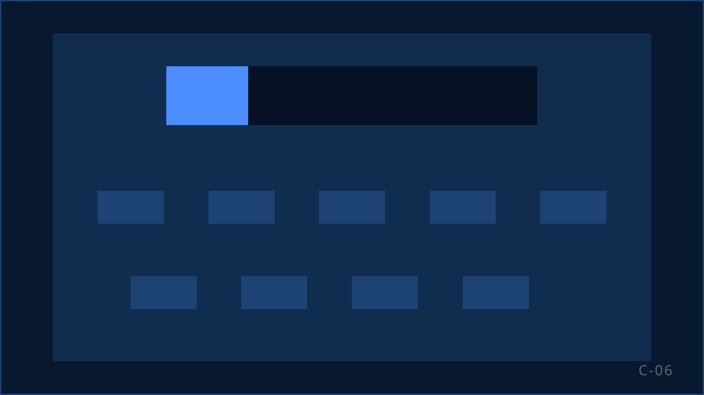
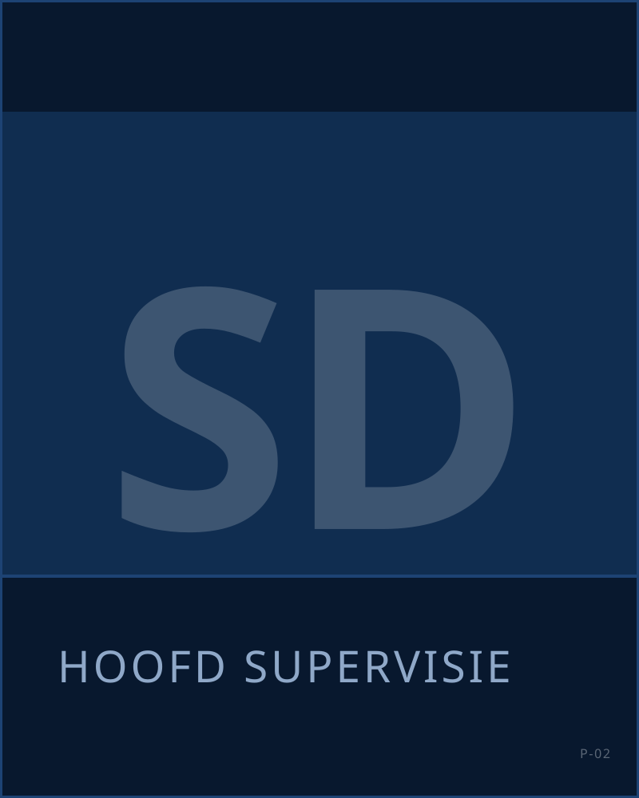
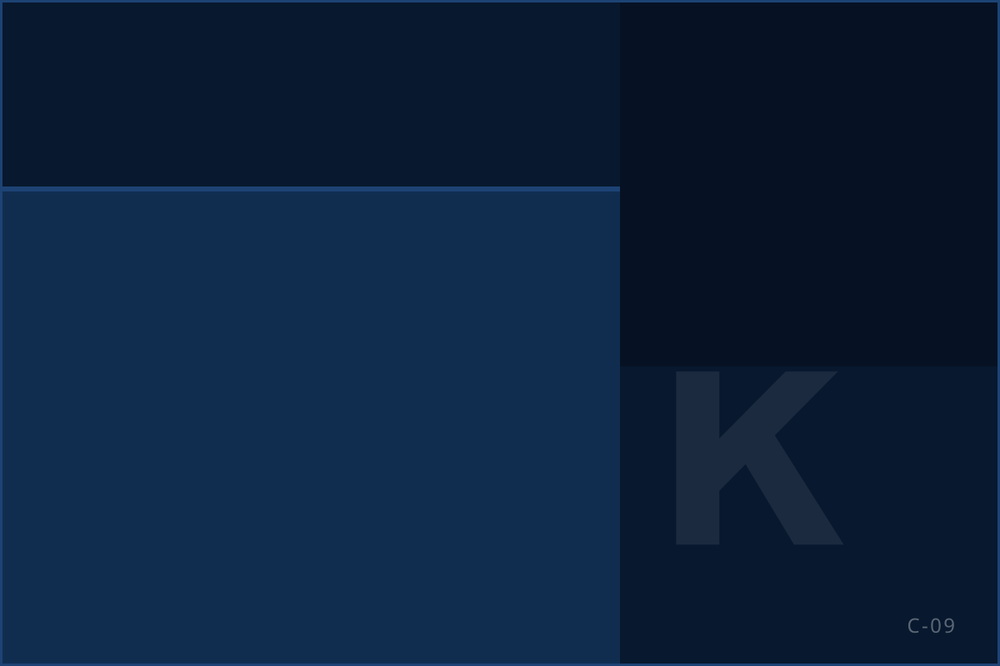

Vijfentwintig jaar in dit vak
KISS marketing & sales is een Nederlandse B2C-salesorganisatie in Rijswijk. Wij werven, trainen en sturen telefonische salesteams aan voor uitgevers, loterijen, goede doelen en abonnementsorganisaties. Een professionele, gedreven club met verstand van zaken, en lang genoeg in dit vak om niet van ieder probleem in paniek te raken.

Begonnen op een zolderkamer
KISS heeft inmiddels ongeveer vijfentwintig jaar ervaring in telefonische B2C-sales. Het bedrijf is ooit begonnen op een zolderkamer en is daarna stap voor stap uitgegroeid tot de organisatie die er nu staat. Geen grote sprong, wel veel projecten.
In die vijfentwintig jaar hebben wij uiteenlopende telemarketingcampagnes uitgevoerd. Voor verschillende opdrachtgevers, doelgroepen en proposities, met steeds andere commerciële vraagstukken erachter. Dat is waar de waarde van die vijfentwintig jaar zit: niet in het getal, maar in wat wij inmiddels weten.
Wat een campagne nodig heeft om van de grond te komen. Hoe je een team aanstuurt dat elke dag de telefoon pakt. Wanneer performance een incident is en wanneer een patroon. Welk probleem je nu moet oplossen en welk probleem vanzelf overgaat. En hoe je opschaalt zonder dat de kwaliteit meezakt.
Ervaring die telt
De ervaring zit niet alleen in processen. Ze zit vooral in de mensen die de operatie aansturen.
Ongeveer 65 jaar gezamenlijke managementervaring
Bij elkaar opgeteld brengt het management ongeveer 65 jaar ervaring mee uit telesales, callcenteroperations, recruitment, training, quality, compliance, klantmanagement en commerciële aansturing.
Een kern die al zo'n zeventien jaar samenwerkt
Een groot deel van de kern van het team werkt al circa zeventien jaar met elkaar. Dat scheelt: dit team hoeft niet meer af te stemmen hoe het samenwerkt, en weet van elkaar wie waar sterk in is.
Voor een opdrachtgever betekent dat continuïteit in de aansturing. Wat dit team in eerdere campagnes is tegengekomen, hoeft u niet nog een keer te betalen.
Informeel in de omgang, serieus over het werk
Binnen KISS werken collega's van ongeveer twintig tot zeventig jaar. Geen studentenbelvloer, geen stereotype callcenter. De sfeer is informeel en de lijnen zijn kort; u hoeft bij ons geen drie lagen door om iets geregeld te krijgen.
Zodra het over campagnes en resultaat gaat, verandert de toon. Afspraken tellen, cijfers tellen, kwaliteit telt. Wij zijn makkelijk in de omgang en niet makkelijk over wat wij leveren.
Mensen beter maken
Niet iedereen komt bij ons binnen als ervaren verkoper. Dat hoeft ook niet.
Verkopen is een vak, en een vak kun je leren. Met training, met veel praktijk, met een supervisor die meeluistert en met feedback die concreet genoeg is om de volgende dag iets mee te doen. Wij investeren daarom liever in begeleiding dan in het zoeken naar de perfecte kandidaat.
Intern zeggen wij wel eens: als iemand Nederlands spreekt, kunnen wij hem leren verkopen. Dat klinkt kort door de bocht, en dat is het ook, maar er zit vijfentwintig jaar ervaring in trainen en coachen achter. Wij weten aardig goed wat iemand nodig heeft om een goed gesprek te voeren.
Diezelfde manier van werken zit in de rest van de organisatie. Wie talent, motivatie en verantwoordelijkheid laat zien, kan meer verantwoordelijkheid krijgen en doorgroeien. Recruitment, selectie en training doen wij in eigen huis.
Wij nemen niets voor lief
Een campagne die vandaag loopt, is geen garantie voor volgende maand. Zo kijken wij er ook naar.
Elke opdracht die wij krijgen, moeten wij elke dag opnieuw waarmaken. Dat betekent niet harder roepen, maar beter kijken: wat gebeurt er werkelijk in de gesprekken, wat werkt, wat werkt niet, wat passen wij deze week aan.
Dat geldt niet alleen voor sales. Ook aan de techniek, de training, de recruitment en de processen wordt continu gesleuteld. Onze manier van werken heet intern Keep it simple: niet ingewikkeld doen om professioneel te lijken, maar een complexe salesoperatie begrijpelijk houden voor iedereen die ermee werkt.
Een salesorganisatie. Geen callcenter, geen uitzendbureau.
KISS verkoopt geen beluren. Wij bouwen commerciële capaciteit: een team dat namens uw merk verkoopt, met eigen recruitment, eigen training, supervisie op de vloer, kwaliteitsbewaking, compliance en rapportage uit eigen ontwikkeling. U koopt geen agents in; u krijgt een salesteam dat wij samenstellen, aansturen en verbeteren.
Wat KISS niet is: een klantenservicebedrijf dat ook wat verkoopt, een flexpool die mensen detacheert, of een belvloer die de goedkoopste wil zijn. KISS werkt onder andere voor DPG Media.
Wie de vloer aanstuurt
Thomas van der GraafDirectie. Eindverantwoordelijk voor KISS en het aanspreekpunt voor nieuwe opdrachtgevers. Patrick HessBackoffice & Finance. Verantwoordelijk voor administratie, facturatie en de backoffice van de campagnes. 
Sabrina DilloeHoofd supervisie. Stuurt de supervisors aan die elk een vast team begeleiden. 
Angelo KollauTraining & Supervisie. Verantwoordelijk voor de basistraining en de campagnetrainingen. Toni ŠkuljIT & Development. Ontwikkelt onze eigen software: de rapportages, de koppelingen en de gegevensuitwisseling met opdrachtgevers. 
Samira de KruyffSupervisor. Stuurt een vast team aan, luistert gesprekken terug en coacht op de vloer. Roshan NidhansingSupervisor. Stuurt een vast team aan, luistert gesprekken terug en coacht op de vloer. Rashad de BruijneSupervisor. Stuurt een vast team aan, luistert gesprekken terug en coacht op de vloer.
Wat er staat
Een opdrachtgever die een substantieel deel van zijn salesoperatie bij ons neerlegt, wil weten wat daar tegenover staat.
Werkplekken in Rijswijk
75 actieve werkplekken op onze eigen vloer.
Commercieel getrainde agents
Een vaste bezetting van agents die de training hebben afgerond en inzetbaar zijn.
Opschalen in blokken
Wij leiden regelmatig nieuwe groepen op. Het tempo stemmen wij af op de opschalingswens van de opdrachtgever.
Onder één dak
Sales, supervisie, training, kwaliteit en compliance, IT & development en backoffice zitten op dezelfde vloer in Rijswijk.
Continuïteit
Vaste supervisor per team, back-up door hoofd supervisie, documentatie van script en bestandsafspraken per campagne, verwerkersovereenkomst en exitafspraken vastgelegd vóór de start. Hoe dat in de praktijk gaat: Werkwijze. Hoe kwaliteit en compliance zijn ingericht: Kwaliteit en compliance.
Kom kijken op de vloer
KISS zit aan de Laan van Oversteen 20 in Rijswijk, naast de snelweg, met tram en bus voor de deur en gratis parkeren. Den Haag, Delft en Rotterdam-Noord liggen binnen een half uur. U bent welkom om de training, de supervisie en de rapportage in de praktijk te zien; dat zegt meer dan een presentatie. Plan een bezoek via de contactpagina.

Zelf bij KISS werken?
Wij werven en trainen onze agents zelf. Saleservaring is geen eis; leren wel.
Benieuwd of wij bij uw campagne passen? Bel Thomas.
Vertel welk volume, welke doelgroep en welk resultaat u zoekt. Wij zeggen eerlijk of en hoe KISS dat kan organiseren.